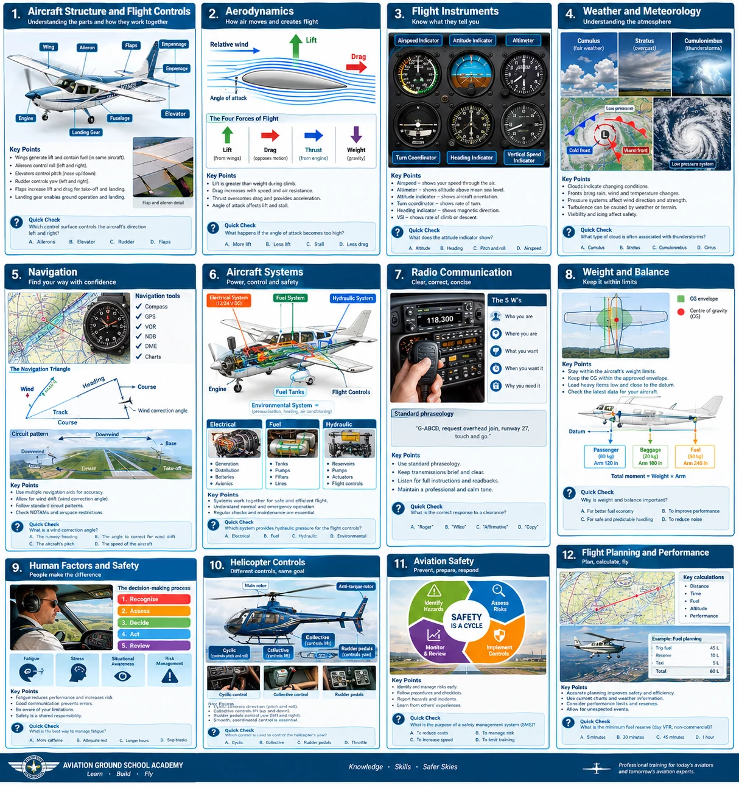
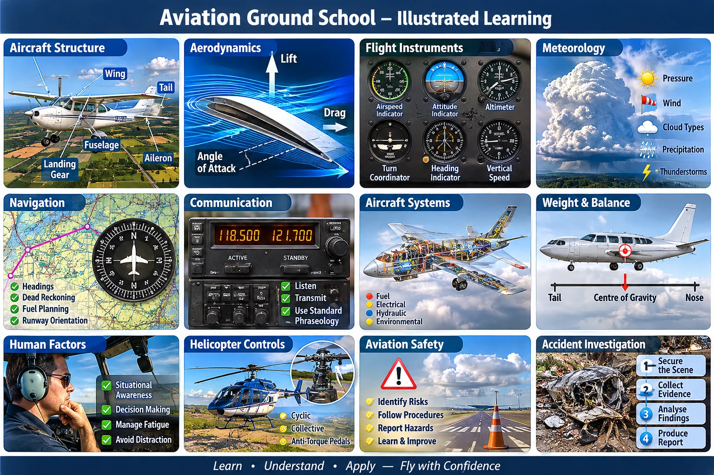
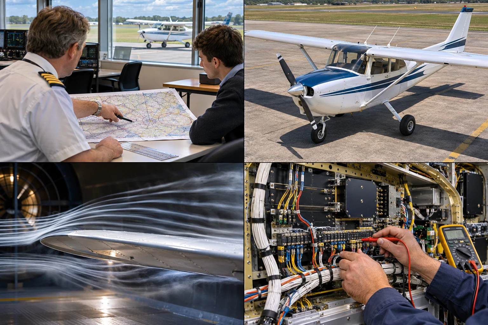
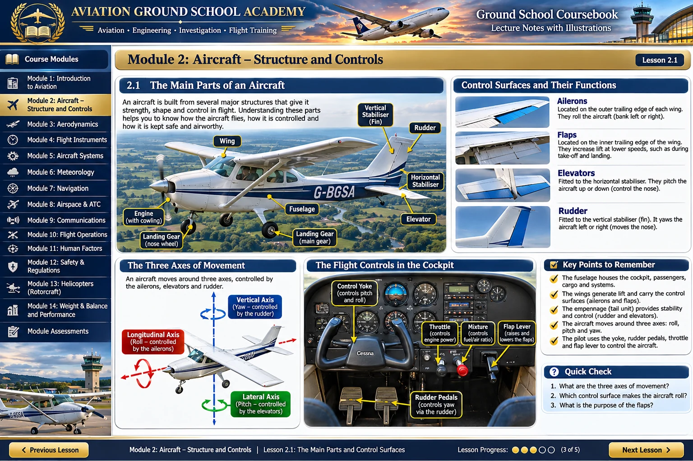

Detailed Ground School learning sheet

Original full illustrated reference for the Ground School orientation module, with related details visible in other topics.
Twelve-panel aviation learning poster

Topic-specific crops from this exact poster appear in relevant Ground School modules and specialist previews.
Aviation instruction and engineering photo collage

Used to introduce the Avionics Engineering specialist course, with its illustrated electronics-workstation panel.
Detailed aircraft structure coursebook concept

Used in the Ground School aircraft structure lesson, accompanied by more specific technical explanations.
These images are educational visual concepts; no picture is an approved aircraft procedure, operational chart, verified accident evidence or regulated training certificate.